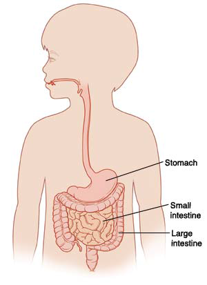
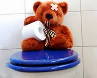
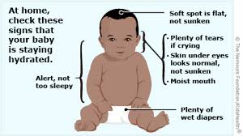

Welcome to the GI IMPACT Study patient education page
Gastroenteritis
Your child has been diagnosed with gastroenteritis. Information about specific pathogens can be accessed by clicking the links at the right of this page.
 What is gastroenteritis?
Gastroenteritis is an infection of the stomach and intestines that can cause vomiting, diarrhea, or both. People can catch gastroenteritis from someone with the infection who didn't wash their hands or from foods or liquids that have been contaminated with the bacteria or virus.
What are the symptoms?
- Vomiting, diarrhea, and stomach cramps are common. Some people also have headaches, fever, or body aches.
- If a child or adult has diarrhea and vomiting, they can lose too much fluid and become dehydrated.
How is viral gastroenteritis treated?
- Most children will get better in 2-7 days.
- The most important thing is to treat or prevent dehydration. Begin with frequent small amounts of clear fluids. These can include rehydration fluids such as Pedialyte or sports drinks, clear broth, breast milk, or flat soda.
- Solid food can be gradually re-started as symptoms improve. Many people find that a bland diet can help. Bananas, rice, toast, bread, noodles, or cereals are often soothing. Don't worry if your child is not very hungry - it is much more important to get enough fluids than solid food.
- Avoid foods or drinks with a lot of fat or sugar. For example, apple or grape juice sometimes make diarrhea worse.
- Some children have trouble digesting milk during and right after diarrheal illness. If milk seems to make the diarrhea worse, it may be best to avoid milk for several days before trying it again.
- Antibiotics will not help when gastroenteritis is caused by a virus because antibiotics don't work against viruses. For viral gastroenteritis, antibiotics may make the diarrhea worse.
 What are the symptoms of dehydration?
- Thirst, dark urine, dry mouth, dizziness or lightheadedness, and fatigue.
- In young children, you may notice a decrease in the number of wet diapers, lack of tears when crying, sunken eyes, fussiness, or that the soft spot on the head (fontanelle) is sunken.
How do you treat dehydration?
- Most infants and children with mild or moderate dehydration can be treated by mouth.
- Babies who are breast-fed should continue breast feeding.
- For children 4 and under with dehydration, it is best to use a commercial rehydration solution (such as Pedialyte®, Infalyte®, Rehydralyte®) – these are also good for older children. Older children can drink sports drinks. Do not use plain water, juice or soda.
- Rehydration solutions may be easier to take if they are cold.
- A syringe or spoon can be used to help infants take in fluids. Frequent small sips usually work better than large amounts at all at once.
 When should I seek medical help?
- Your child does not urinate (pee) for 12 hours or if they have fewer than 3 wet diapers in a 24-hour period.
- Your child is very sleepy and won’t respond or your child is very irritable.
- If your child cannot take fluids and shows signs of dehydration.
- If your child has severe belly pain or swelling.
- If your child has blood in their diarrhea or vomit.
- If your child has a fever higher than 104°F (40°C) or for children younger than 3 months, higher than 100.4°C (38.0°C).
How do I protect my family?
- The germs that cause gastroenteritis are very contagious.
- Wash hands often, and always after going to the bathroom, changing a diaper or cleaning up vomit or diarrhea, or before eating.
- Make sure children wash their hands.
- Alcohol based disinfectants (such as Purell) can be useful when soap and water are not available, but for some viruses like Norovirus, soap and water work better than alcohol based disinfectants.
- Clean contaminated surfaces with disinfectant or bleach solution (5-25 tablespoons of household bleach per gallon of water).
- People who are sick should not prepare food.